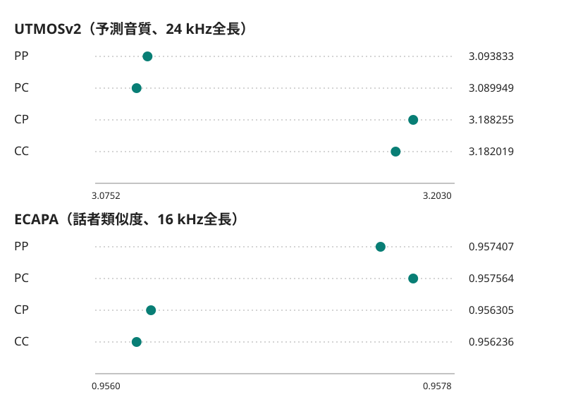

主調波と雑音包絡のHMPP/HMCZT切替：固定120録音の4条件比較
PP（現ベースApron相当）に対し、主調波側の設定をHMCZTに切り替えたCPは、無編集の予測音質が平均+0.094422428、全長の話者類似度が-0.001102296でした。両方を切り替えたCCとPPの差は順に+0.088186008、-0.001171238です。指標の向きがそろわないため、作業ベースApronを維持します。
英語40話者・120録音を各条件で同じ重みで集計しました。PPは主調波と雑音包絡がHMPP、PCはHMPP/HMCZT、CPはHMCZT/HMPP、CCはHMCZT/HMCZTです。表の各セルは120録音の絶対平均と同じ指標・音高・採点範囲内の順位です。順位1位を太字にしました。SCOREQは原音との距離で、小さいほど望ましい値です。順位は指標ごとで、総合順位ではありません。
HMPPは基本周波数（F0）の整数倍付近からピークを探し、HMCZTは整数倍の周波数を直接評価します。切替には固定したlibllsm2の方式分岐を使っています。
現ベースPPと4条件の比較
| 指標 | 音高 | 採点範囲 | PP | PC | CP | CC | CP−PP | CC−PP | 交互作用の符号 |
|---|---|---|---|---|---|---|---|---|---|
| UTMOSv2（予測音質） | +0半音 | 24 kHz出力全長 | 3.093833（3位） | 3.089949（4位） | 3.188255（1位） | 3.182019（2位） | +0.094422 | +0.088186 | -0.002353 |
| UTMOSv2（予測音質） | -3半音 | 24 kHz出力全長 | 3.120044（4位） | 3.124485（3位） | 3.200021（2位） | 3.202871（1位） | +0.079977 | +0.082827 | -0.001591 |
| UTMOSv2（予測音質） | +3半音 | 24 kHz出力全長 | 2.790665（4位） | 2.790844（3位） | 2.895481（2位） | 2.905323（1位） | +0.104816 | +0.114658 | +0.009662 |
| ECAPA（話者類似度） | +0半音 | 16 kHz変換・出力全長 | 0.957407（2位） | 0.957564（1位） | 0.956305（3位） | 0.956236（4位） | -0.001102 | -0.001171 | -0.000226 |
| ECAPA（話者類似度） | -3半音 | 16 kHz変換・出力全長 | 0.839277（3位） | 0.839231（4位） | 0.844074（1位） | 0.843846（2位） | +0.004797 | +0.004569 | -0.000183 |
| ECAPA（話者類似度） | +3半音 | 16 kHz変換・出力全長 | 0.861286（3位） | 0.860998（4位） | 0.862521（1位） | 0.862464（2位） | +0.001235 | +0.001179 | +0.000231 |
| ECAPA（話者類似度） | +0半音 | 16 kHz固定共通先頭区間 | 0.957364（2位） | 0.957522（1位） | 0.956282（3位） | 0.956220（4位） | -0.001082 | -0.001144 | -0.000219 |
| SCOREQ（原音との距離） | +0半音 | 16 kHz固定共通先頭区間 | 0.243481（3位） | 0.243736（4位） | 0.239862（2位） | 0.239626（1位） | -0.003619 | -0.003855 | -0.000492 |
| eSTOI（明瞭性） | +0半音 | 16 kHz固定共通先頭区間 | 0.930536（3位） | 0.930525（4位） | 0.931053（2位） | 0.931105（1位） | +0.000517 | +0.000569 | +0.000063 |
右端はCC−CP−PC＋PPです。二つの切替が足し算どおりにならない方向を表す符号で、正負を改善・悪化とは呼びません。各平均・順位は今回、保存個票から公開用に追加集計しました。測定時から保存されていた集計として扱いません。6対比×9群の全54平均は集計JSONに載せています。
同じ録音の短い音声で4条件を比べる
以下は固定済みの2録音×4条件×3音高から、保存済み波形の先頭5秒だけを切り出した24例です。24 kHz・PCM16の変換には音量調整、再標本化、振幅の切り詰めをしていません。出典と変更内容、変換前後のSHA・長さ・振幅範囲を記録しました。聴取による新しい品質評価は行っていません。
librispeech_1089-134686-0008
librispeech_1188-133604-0003
無編集の二指標は同じ結論にならない
図は無編集UTMOSv2と全長ECAPAを別々の尺度で示します。横位置はパネルごとの尺度で読みます。

6つの差と音高編集を分けて読む
下表は同一録音内の差を120件で平均したものです。主調波切替の効果を物理的に独立した声帯・雑音源の因果差とは解釈しません。主調波を変えると、調波合成を引いた残差と下側3帯域の雑音解析にも変化が伝わります。
54対比の平均を開く
| 指標・音高・範囲 | PC−PP | CC−CP | CP−PP | CC−PC | CC−PP | CC−CP−PC＋PP |
|---|---|---|---|---|---|---|
| UTMOSv2（予測音質）・+0半音・24 kHz出力全長 | -0.003883 | -0.006236 | +0.094422 | +0.092069 | +0.088186 | -0.002353 |
| UTMOSv2（予測音質）・-3半音・24 kHz出力全長 | +0.004441 | +0.002850 | +0.079977 | +0.078387 | +0.082827 | -0.001591 |
| UTMOSv2（予測音質）・+3半音・24 kHz出力全長 | +0.000180 | +0.009842 | +0.104816 | +0.114478 | +0.114658 | +0.009662 |
| ECAPA（話者類似度）・+0半音・16 kHz変換・出力全長 | +0.000157 | -0.000069 | -0.001102 | -0.001328 | -0.001171 | -0.000226 |
| ECAPA（話者類似度）・-3半音・16 kHz変換・出力全長 | -0.000046 | -0.000229 | +0.004797 | +0.004615 | +0.004569 | -0.000183 |
| ECAPA（話者類似度）・+3半音・16 kHz変換・出力全長 | -0.000287 | -0.000057 | +0.001235 | +0.001466 | +0.001179 | +0.000231 |
| ECAPA（話者類似度）・+0半音・16 kHz固定共通先頭区間 | +0.000157 | -0.000062 | -0.001082 | -0.001301 | -0.001144 | -0.000219 |
| SCOREQ（原音との距離）・+0半音・16 kHz固定共通先頭区間 | +0.000255 | -0.000236 | -0.003619 | -0.004111 | -0.003855 | -0.000492 |
| eSTOI（明瞭性）・+0半音・16 kHz固定共通先頭区間 | -0.000010 | +0.000052 | +0.000517 | +0.000580 | +0.000569 | +0.000063 |
−3/＋3半音の編集差は、同じ条件・録音の編集値から無編集値を引きました。UTMOSv2は24 kHz出力全長、ECAPAは16 kHzに変換した出力全長同士です。16 kHzの固定共通先頭区間をこの編集差に混ぜていません。全16群は集計JSONにあります。
保存個票と照合の範囲
完了した別実行の480解析、1,440波形、4,320品質値を対象にし、欠測は0件でした。最初の別実行は子プロセスの3,600秒制限で品質3,115/4,320件まで進み、残る1,205件は未実行でした。この完了実行へ旧数値を取り込んでいません。保存個票4,320件を十進数で読み、絶対平均と順位36セルを公開用に計算しました。保存済み6対比×9群の54群と編集差16群は、元の計算順序・十進28桁の精度で再計算し、録音別・話者別を含む11,900の数値欄が厳密に一致しました。全品質個票と来歴・監査範囲を公開します。
ここで「出力全長」とは、固定入力の先頭最大6秒から生成された波形の全長です。LibriSpeechの元発話全体を採点した意味ではありません。UTMOSv2は24 kHzの全出力、ECAPA全長は16 kHz変換後、無編集のECAPA・SCOREQ・eSTOI固定区間は原音と出力の共通先頭部分を使いました。新しい人の聴取、有意差検定、品質合格閾値、48 kHz・日本語の評価はありません。
同じ主調波経路のPP/PCとCP/CC、計240組の保存Layer1診断では、F0・Rd・声道の振幅・声源の調波位相の差要素と形状不一致は0でした。保存されていない調波列や残差、PSDまで一致したとは主張しません。診断対象と計数を参照してください。
既公開のApron評価と調波解析2条件比較は経緯の参照です。今回の4条件の共同順位には入れていません。今後もApronを作業ベースとし、採用判断には指標間の得失と適用範囲を併せて見ます。